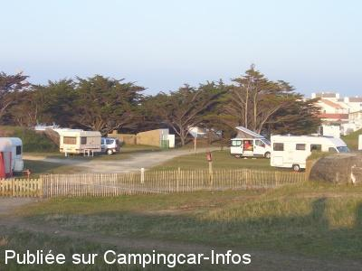

AC = Camping acceptant les camping-cars de :
ÎLE DE NOIRMOUTIER - L'HERBAUDIERE
(N° 252)
Accès/adresse :
Rue de La Pointe
Camping de la Pointe **
85330 L'HERBAUDIERE
Camping de la Pointe **
85330 L'HERBAUDIERE
Latitude : (Nord) 47.02411° Décimaux ou 47° 1′ 26′′
Longitude : (Ouest) -2.3033° Décimaux ou -2° 18′ 11′′
Tarif : 2015
Emplacement, 2 personnes : 12,54 à 19,47 €
Personne + 13 ans : 3,35 à 4,27 €
Enfant - 13 ans : 2,77 à 3,55 €
Électricité 10 A : 3,75 €
Animal : 1,88 à 2,10 €
Taxe de séjour + 13 ans : 0,22 €
Lave-linge : 4 €
Sèche-linge : 2 €
Type de borne : Plateforme
Services :


Accès handicapés
Autres informations :
Ouvert du 01/04 au 30/10
221 emplacements
Tél+ 33 (0)251 391 670
camping.pointeherbaudiere@ville-noirmoutier.fr
http://www.noirmoutier-campings.fr

Le 01/07/2010 par vivi et yvan
de
camus
le 29/06/2015 :
Nous avons passé 2 jours sur ce camping. TRES BIEN, tous commerces à proximité, camping trés propre, bien entretenu. Certes il y a des places en pente, mais avec les cales il n'y a aucun souci. Nous y retournerons c'est certain. Pour les resto, il y a l'embarras du choix à tous les prix.
Nous avons passé 2 jours sur ce camping. TRES BIEN, tous commerces à proximité, camping trés propre, bien entretenu. Certes il y a des places en pente, mais avec les cales il n'y a aucun souci. Nous y retournerons c'est certain. Pour les resto, il y a l'embarras du choix à tous les prix.
de
magrob
le 23/04/2015 :
nous avons passé quelques jours sur cet agréable camping du 10 au 16 avril , nous avons l'habitude d'y
séjourner et nous y revenons toujours avec plaisir
les emplacements sont effectivement un peu en pente car nous sommes sur un terrain naturel de bord de mer, mais tout camping cariste possède des cales , et le plaisir de se retrouver dans un tel lieu vaut bien ce petit effort , il existe 2 boulangeries et une épicerie à l'herbaudière , vous pouvez aussi si vous aimez les poissons les homards et les araignées vous rendre sur le port à l'arrivée du bateau le THEMIS , bon séjour sur cette très belle ile .
nous avons passé quelques jours sur cet agréable camping du 10 au 16 avril , nous avons l'habitude d'y
séjourner et nous y revenons toujours avec plaisir
les emplacements sont effectivement un peu en pente car nous sommes sur un terrain naturel de bord de mer, mais tout camping cariste possède des cales , et le plaisir de se retrouver dans un tel lieu vaut bien ce petit effort , il existe 2 boulangeries et une épicerie à l'herbaudière , vous pouvez aussi si vous aimez les poissons les homards et les araignées vous rendre sur le port à l'arrivée du bateau le THEMIS , bon séjour sur cette très belle ile .
de
chouky78
le 18/04/2015 :
Bonjour,
nous avons passés 2 jours du 14.04.15 au 16.04.15. Camping agréable en bord de mer,emplacement légèrement en pente mais très accessible. Sanitaire très propre.
Commerces à proximité et restaurants. Nous recommandons LA GRAND VOILE.
Bonjour,
nous avons passés 2 jours du 14.04.15 au 16.04.15. Camping agréable en bord de mer,emplacement légèrement en pente mais très accessible. Sanitaire très propre.
Commerces à proximité et restaurants. Nous recommandons LA GRAND VOILE.
de
Jean-Pierre
le 22/03/2015 :
Déçu : emplacements en pente sur sable non stabilisé, wifi dans une salle a proximité de l'accueil ; Prix excessif(12,54 Euros), Électricité (3,75/jour) la municipalité à ouvert spécialement le camping pour les grandes marées. Sanitaire en réfection impossibilité d'y accéder. Impossible de faire le plein d'eau en raison réfection sanitaire. Aucun commerces dans village que boulangerie. Dommage car l'accueil y est très agréable
Déçu : emplacements en pente sur sable non stabilisé, wifi dans une salle a proximité de l'accueil ; Prix excessif(12,54 Euros), Électricité (3,75/jour) la municipalité à ouvert spécialement le camping pour les grandes marées. Sanitaire en réfection impossibilité d'y accéder. Impossible de faire le plein d'eau en raison réfection sanitaire. Aucun commerces dans village que boulangerie. Dommage car l'accueil y est très agréable
de
PapyGaston
le 03/01/2015 :
Une partie du camping est ouverte jusqu'au mois de mars pour les CC 5€ les 24 heures électricité comprise, encaissement effectué par la police municipale très sympathique que demander de plus.
Une partie du camping est ouverte jusqu'au mois de mars pour les CC 5€ les 24 heures électricité comprise, encaissement effectué par la police municipale très sympathique que demander de plus.
de
clau
le 08/11/2014 :
Passé 4 jours dans ce camping (12,20€ tout compris) au soleil ou sous les sapins, côté atlantique ou estuaire.
Accueil agréable.
La municipalité ouvrira cet hiver pour les CC.
Passé 4 jours dans ce camping (12,20€ tout compris) au soleil ou sous les sapins, côté atlantique ou estuaire.
Accueil agréable.
La municipalité ouvrira cet hiver pour les CC.
de
Alain et Gilles
le 29/10/2014 :
Assez déçu : emplacements en pente sur sable non stabilisé, pas de wifi à la place ; pas de chance avec le voisinage !!! Vu le prix excessif on ne reste pas ...
Assez déçu : emplacements en pente sur sable non stabilisé, pas de wifi à la place ; pas de chance avec le voisinage !!! Vu le prix excessif on ne reste pas ...
de
Maine.Alain
le 28/04/2014 :
camping agréable en bord de mer, sanitaires très propre, rien à dire sinon le prix, car attention le forfait ( 12€ )ne comprend ni l'électricité ni le chien.
.
camping agréable en bord de mer, sanitaires très propre, rien à dire sinon le prix, car attention le forfait ( 12€ )ne comprend ni l'électricité ni le chien.
.
de
Michel/Annick
le 28/04/2013 :
§
Passé 2 jours à cet endroit les 17/18/04/2013-220 pl
elct T/services vues / océan-200Ms de/T/commerces+ port 13€/24H jusqu'au 30/04:Haute saison? Vous bénéficiez des sanitaires gratis E chaudes ainsi que des sevices,wifi etc.A recommander voir à réserver très calme clôturé accès océan pour jeunes enfants/jeux, peu bruyant.Possibilitée PL/soleil ou ombragée.
§
Passé 2 jours à cet endroit les 17/18/04/2013-220 pl
elct T/services vues / océan-200Ms de/T/commerces+ port 13€/24H jusqu'au 30/04:Haute saison? Vous bénéficiez des sanitaires gratis E chaudes ainsi que des sevices,wifi etc.A recommander voir à réserver très calme clôturé accès océan pour jeunes enfants/jeux, peu bruyant.Possibilitée PL/soleil ou ombragée.
de
Louisette
le 20/03/2011 :
Ouverture exceptionnelle ce WE, pour les grandes marées.
Camping agréable avec vue sur l' Océan
Nous venons d'y passer 2 nuits, très agréable et calme
Ouverture exceptionnelle ce WE, pour les grandes marées.
Camping agréable avec vue sur l' Océan
Nous venons d'y passer 2 nuits, très agréable et calme
de
jm dompnier
le 04/08/2010 :
Nous sommes passés sur ce camping la 2ème quinzaine de juillet, camping calme et agréable, en bord de mer, prix 27€ pour 4 adultes, et 1 enfant, plus 1 chien et l'électricité, accès plage aisé, ainsi que les commodités pour le CC (vidanges et remplissage). A noter l'excellente propreté des sanitaires du camping, tenu par un personnel dynamique et très sympathique.
Nous sommes passés sur ce camping la 2ème quinzaine de juillet, camping calme et agréable, en bord de mer, prix 27€ pour 4 adultes, et 1 enfant, plus 1 chien et l'électricité, accès plage aisé, ainsi que les commodités pour le CC (vidanges et remplissage). A noter l'excellente propreté des sanitaires du camping, tenu par un personnel dynamique et très sympathique.
de
Gagcbr
le 15/07/2009 :
Camping agréable en bordure de mer, attention au sable. 16€50 pour 1 CC 2 adultes et 2 enfants sans services mais au moins on est quasi sûr d'avoir de la place et bien plus agréable que le parking de Noirmoutier. Comme dit précédemment, le camping est en majorité utilisé par les CC §
Camping agréable en bordure de mer, attention au sable. 16€50 pour 1 CC 2 adultes et 2 enfants sans services mais au moins on est quasi sûr d'avoir de la place et bien plus agréable que le parking de Noirmoutier. Comme dit précédemment, le camping est en majorité utilisé par les CC §
de
Patricia
le 25/10/2006 :
Bonjour
Mefiez vous de l'ensablement
verifiez ou vous roulez.
Magnifique camping
Bonjour
Mefiez vous de l'ensablement
verifiez ou vous roulez.
Magnifique camping
de
Claude S. 88
le 22/10/2006 :
Camping très agréable, bien situé en bord de mer et à proximité du port.
Tarif 2006 pour un C.C. et 2 personnes :8.25€ de Pâques au 31-05 et du 15-09 au 31-10 ; 9.70€ du 01 au 30-06 et du 01 au 15-09 ; 12.80€ du 01-07 au 31-08. 3.45€ en plus si électricité 10A.
Beaucoup de C.C. sur le terrain début septembre ; à ce tarif-là, cela se comprend !
Camping très agréable, bien situé en bord de mer et à proximité du port.
Tarif 2006 pour un C.C. et 2 personnes :8.25€ de Pâques au 31-05 et du 15-09 au 31-10 ; 9.70€ du 01 au 30-06 et du 01 au 15-09 ; 12.80€ du 01-07 au 31-08. 3.45€ en plus si électricité 10A.
Beaucoup de C.C. sur le terrain début septembre ; à ce tarif-là, cela se comprend !
de
Yves Rasson
le 20/05/2006 :
En ce 13 Mai 2006, le tarif était de 8.40 € jour pour un CC et deux personnes " services CC compris "
Emplacements avec vue sur mer.
Personnel très gentil.
Je vous le conseil car à 500 mètres, il y a une aire de svc (parking) : stationnement 4.50 € + svc 2 €.
En ce 13 Mai 2006, le tarif était de 8.40 € jour pour un CC et deux personnes " services CC compris "
Emplacements avec vue sur mer.
Personnel très gentil.
Je vous le conseil car à 500 mètres, il y a une aire de svc (parking) : stationnement 4.50 € + svc 2 €.